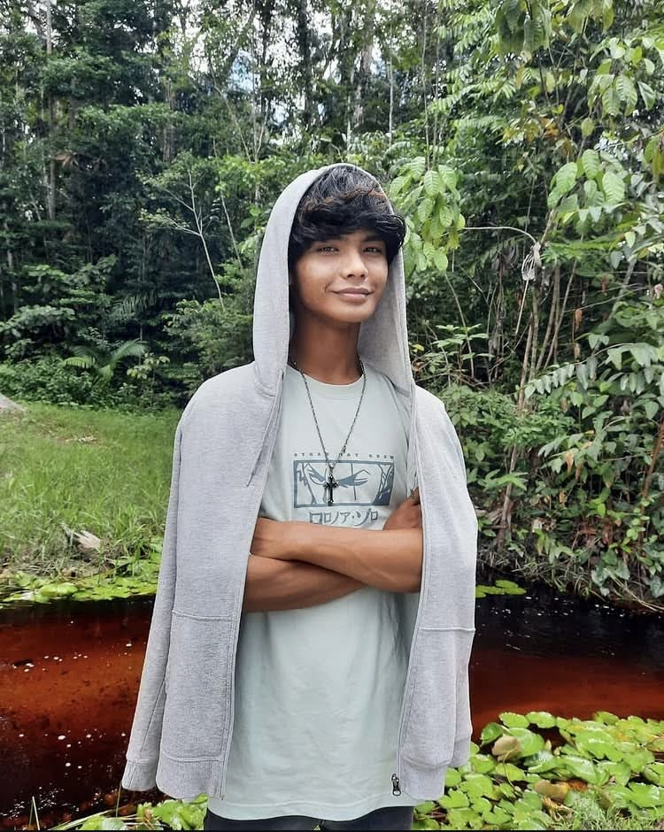

Hi, ik ben Vince Bahri
Een gedreven Software Engineering student gebasseerd in Paramaribo Suriname met een sterke focus op frontend, backend en fullstack. Ik vind het geweldig om complexe problemen om te zetten in slimme, schaalbare software. Ik ben altijd op zoek naar een uitdagende stage.

// Wat ik doe
Momenteel studeer ik Software Engineering aan UNASAT en ben ik werkzaam binnen grootschalige klanten service call center Concentrix als IT servicedesk medewerker. Ik analyseer complexe systemen, los hardnekkige technische verstoringen op en optimaliseer infrastructuren waar direct resultaat vereist.
// Mijn Focus
Mijn prioriteit ligt bij het funderen en onderbouwen van betrouwbare websites en softwaresystemen. Ik focus me op het ontwerpen van een solide logische basis, een schone code-architectuur en het kritisch documenteren van processen, zodat applicaties vanaf de grond af stabiel en schaalbaar worden opgebouwd.